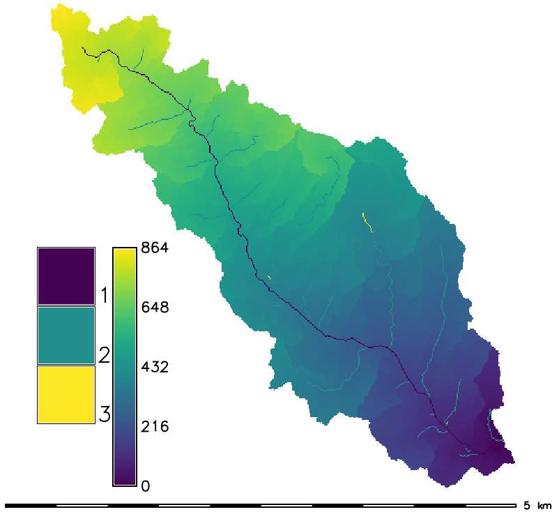

DESCRIPTION
r.basin generates the main morphometric parameters of the
basin starting from the digital elevation model and the coordinates
of the basin's closing section (outlet).
Important:
r.basin works in projected locations, geographic or
xy-locations are not supported.
The closing section's coordinates must belong to the river network
generated by r.stream.extract.
It is suggested to run it beforehand.
In GRASS GIS 7, r.basin has been improved to take in input coordinates not
exactly belonging to the river network (but not too far from it).
It basically snaps to the closest point belonging to the network.
This feature is experimental and might not produce the expected result.
To check if the snapped outlet is acceptable, at the end of the
computation, two outlet vector maps are produced: the one with the
coordinates inserted by the user and the snapped one. If the snapped
outlet is not acceptable, the user should tweak the coordinates to
match with the river network.
Morphometric parameters of basin
The main parameters are:
- The coordinates of the vertices of the rectangle containing
the basin.
- The center of gravity of the basin: the
coordinates of the pixel nearest to the center of gravity of the
geometric figure resulting from the projection of the basin on the
horizontal plane.
- The area of the basin: is the area of a single cell multiplied
by the number of cells belonging to the basin.
- The perimeter: is the length of the contour of the figure
resulting by the projection of the basin on the horizontal plane.
- Characteristic values of elevation: the highest and the
lowest altitude, the difference between them and the mean elevation
calculated as the sum of the values of the cells divided by the
number of the cells.
- The mean slope, calculated averaging the slope map.
- The length of the directing vector: the length of the vector
linking the outlet to the center of gravity of the basin.
- The prevalent orientation: in GRASS GIS the
aspect categories represent the number degrees of east and they
increase counterclockwise: (90deg is North, 180 is West, 270 is
South 360 is East). The aspect value 0 is used to indicate undefined
aspect in flat areas with slope=0. We instead calculate the
orientation as the number of degrees from north, increasing
counterclockwise.
- The length of the main channel: is the length
of the longest succession of segments that connect a source to the
outlet of the basin.
- The mean slope of the main channel: it is calculated as follows
where N is the topological diameter, i.e. the number of links
in which the main channel can be divided on the basis of the
junctions.
- The circularity ratio: is the ratio between the area of the
basin and the area of the circle having the same perimeter of the
basin.
- The elongation ratio: is the ratio between the diameter of the
circle having the same area of the basin and the length of the main
channel.
- The compactness coefficient: is the ratio between the perimeter
of the basin and the diameter of the circle having the same area of
the basin.
- The shape factor: is the ratio between the area of the basin and
the square of the length of the main channel.
- The concentration time (Giandotti, 1934):
where A is the area, L the length of the main channel and H the
difference between the highest and the lowest elevation of the basin.
- The mean hillslope length: is the mean of the distances
calculated along the flow direction of each point not belonging to
the river network from the point in which flows into the network.
- The magnitude: is the number of the branches of order 1
following the Strahler hierarchy.
- The max order: is the order of the basin, following the Strahler
hierarchy.
- The number of streams: is the number of the branches of the
river network.
- The total stream length: is the sum of the length of every
branch.
- The first order stream frequency: is the ratio between the
magnitude and the area of the basin.
- The drainage density: is the ratio between the total length of
the river network and the area.
- The Horton ratios (Horton, 1945; Strahler, 1957).
Plots
- The distance-area function, also known as Width Function: in x
axis is the length and in y axis is the area.
- The hypsographic curve provides the distribution of the areas at
different altitudes. Each point on the hypsographic curve has on the
y-axis the altitude and on the x-axis the percentage of basin
surface placed above that altitude.
- The hypsometric curve has the same shape but is dimensionless.
EXAMPLE
North Carolina sample dataset example:
g.region raster=elevation -p
r.basin map=elevation prefix=my_basin coord=637304.924954,218617.100523 \
dir=/tmp/my_basin threshold=1000
# visualize some results
d.mon wx0
d.rast my_basin_elevation_hack
d.rast my_basin_elevation_dist2out
d.his i=aspect h=my_basin_elevation_dist2out

Dependencies
- Matplotlib
- r.hypso
- r.stream.basins
- r.stream.distance
- r.stream.extract
- r.stream.order
- r.stream.snap
- r.stream.stats
- r.width.funct
Known issues
- r.basin hasn't been designed for working in lat/long coordinates.
This means that if you are working in lat/long coordinates, you need to reproject
your map first in order to apply the tool.
- r.basin is designed to work in meters unit. The values that you get using
feet are nonsense.
- r.basin does not handle overwrite. You need to delete the output products
already created (maps, text files, figures) by hand before running it again.
SEE ALSO
r.hypso (Addon),
r.stream.basins (Addon),
r.stream.channel (Addon),
r.stream.distance (Addon),
r.stream.extract,
r.stream.order (Addon),
r.stream.segment (Addon),
r.stream.slope (Addon),
r.stream.snap (Addon),
r.stream.stats (Addon),
r.watershed,
r.width.funct (Addon)
Related Wiki page
CITE AS
Di Leo Margherita, Di Stefano Massimo (2013) An Open-Source Approach for Catchment's
Physiographic Characterization, Abstract H52E-06 presented at 2013 Fall Meeting, AGU,
San Francisco, CA, USA 9-13 Dec.
abstract
REFERENCES
- Rodriguez-Iturbe I., Rinaldo A. (2001) Fractal River Basins,
Chance and Self-Organization. Cambridge Press
- In Italian: Di Leo M., Di Stefano M., Claps P., Sole A.
(2010) Caratterizzazione morfometrica del bacino idrografico in
GRASS GIS (Morphometric characterization of the catchment in GRASS
GIS environment),
Geomatics Workbooks, n. 9
AUTHORS
Margherita Di Leo (grass-dev AT lists DOT osgeo DOT org ), Massimo Di Stefano
{kind=link}